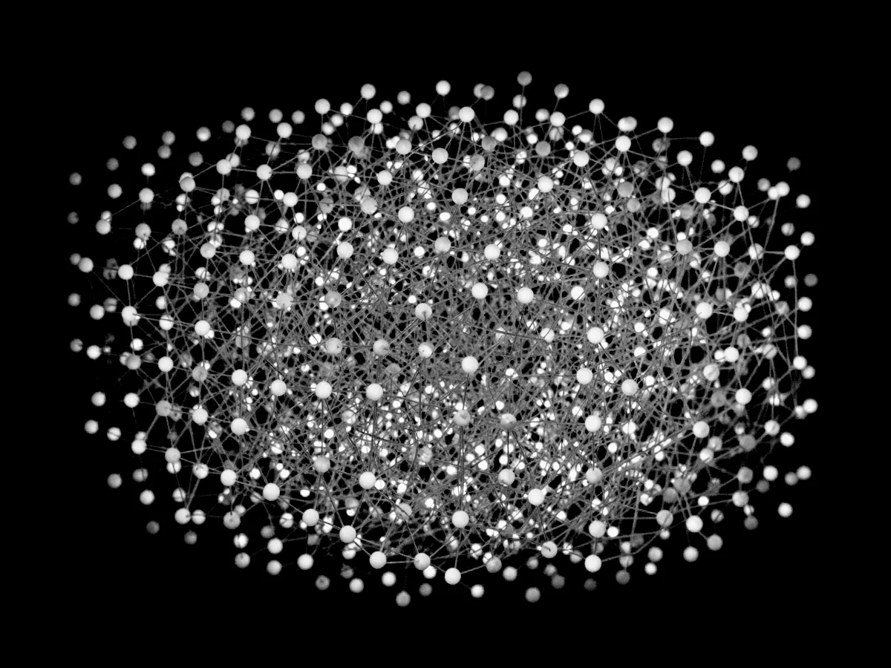

Your notes,
compiled.
A knowledge base your AI agents maintain under written law. Not a chatbot. Not a vector store.
$ git clone https://github.com/chobizzy/llm-wiki ~/Projects/llm-wiki $ pip install -e ~/Projects/llm-wiki $ llm-wiki setup --vault /path/to/your/vault
Compiled once,
not retrieved every time
Your sources are the source code. Your agents are the compiler. The wiki is the build artifact, and Obsidian is the IDE you browse it in.
Compiled, not retrieved
Most tools retrieve at question time: you ask, a retriever grabs some chunks, a model improvises, and nothing is learned. Ask again tomorrow and the same work happens again. llm-wiki inverts that. Knowledge is compiled once, when a source arrives, into small linked markdown pages you can read yourself.
Laws, not tips
The hard part is not the compiling. It is keeping a compiler honest across many sessions and more than one agent. So the vault ships with a constitution: eleven numbered laws, a six-point definition of done, and a gate that decides whether an operation completed. Every rule has a number, a never, or a check.
Drop it in the inbox
Put a paper in _inbox/, say ingest my inbox, and an agent
distills it into the seven page categories, merging into pages that already exist rather
than piling up duplicates. Re-ingesting an unchanged source is a no-op, because every
source is content-hashed in .manifest.json.
The graph weaves itself
Say link my pages and cross-linker weaves missing wikilinks
between related pages. Ask what connects X and Y and wiki-query
walks typed relationship edges, multi-hop. graph-query answers from
the link index alone, without reading a single page body.

The gate, not the model
doctor and lint must pass: frontmatter,
broken links, lifecycle states, duplicates, orphans. The gate is ordinary deterministic
code, so whether an operation finished is decided by a check rather than by asking the
model that did the work to grade itself.
It is just markdown
Plain files in a git repo. No database, no embeddings, no API keys, because your agent already has model access. When the tool dies you still have a folder of markdown, and there is nothing to migrate.
What it looks like
after a while
Same documents,
different artifact
Both read your documents. They differ in when the work happens and what is left behind afterwards.
| Dimension | Typical RAG or notes chatbot | llm-wiki |
|---|---|---|
| When work happens | At query time, every time | Once, at ingest. Results are reused forever |
| What you get | An answer you cannot inspect | Markdown pages you can read, edit, and diff |
| Storage | Vector DB, embeddings, an index | Plain files in a git repo. No database |
| Duplicates | Near-duplicate chunks pile up | Law 6: one concept, one page. New info merges in |
| Hallucination | Invisible, mixed into prose | Marked inline: ^[inferred], ^[ambiguous] |
| Trust | "The model said so" | Deterministic gate: doctor and lint must pass |
| Lock-in | Rebuild when the tool dies | It is a folder of markdown. Nothing to migrate |
Agents do not grade
their own homework
A write operation is finished only when all six conditions below hold, and the last one is checked by a program rather than by the model that did the work.
Full frontmatter
Every page carries the complete schema plus wikilinks to related pages.
Manifest updated
.manifest.json records every source touched, with the pages it produced.
Operation logged
log.md gains one ISO-8601 UTC line naming the agent and the operation.
Hot list refreshed
hot.md summarises what changed in a single line.
Index reconciled
index.md lists every page exactly once, with a summary and tags.
Deterministic gate
llm-wiki doctor passes and lint reports zero fail-level findings.
Five of the eleven laws
Numbered as they appear inAGENTS.md
-
LAW 1
Never delete a wiki page. Supersede it: set
lifecycle: archivedand pointsuperseded_by:at the successor. -
LAW 2
Never modify anything inside
_inbox/. Layer-1 sources are immutable ground truth. -
LAW 5
Never present a synthesized claim as extracted. Inferences are marked
^[inferred]and contested claims^[ambiguous]. - LAW 6 Never create a page for a concept that already has one. One concept, one page. New information merges into the existing page.
-
LAW 10
Never set
lifecycleabovedraft. Promotion toreviewedorverifiedis a human-only transition.
32 skills and a CLI
that does the counting
Skills are plain SKILL.md files in skills/, so you
can read them, fork them, and extend them. The CLI handles everything deterministic, which
keeps the model out of questions that have exact answers.
Foundation
Ingest
Read
Maintain
Obsidian UX
Meta
The CLI
Roughly 2,900 lines of Python, standard library only. Fourteen commands, no API keys.